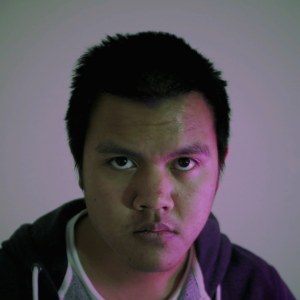

Hi.

My name is Adrian, and on this page I'll show you my progression as a creative paraprofessional.
I am a Bachelor of Film post-production major who is a tech and entertainment enthusiast.
I am also an aspiring motion designer and editor, and am currently refining my skills in both
Adobe Premiere Pro and Adobe After Effects.
During my stint studying at SAE Creative Media Institute, I have worked on numerous projects in various roles, most notably as an editor, vfx artist,
assistant editor, and 1st AC.
If you have original footage, I can try my best to refresh the project under your direction to post produce
videos that feel new, engaging, and do what they are supposed to do - promote your brand, attract new clients,
and be the audio-visual business card that will do you proud.
I am not going to give up before I win a motherfucking major. - Danylo "Zeus" Teslenko (1 year and 14 days before he won a $1,000,000 Counter-Strike: Global Offensive major tournament)
If you scroll back to the top, you'll find buttons to other portions of this site, including my video portfolio and my photography projects.